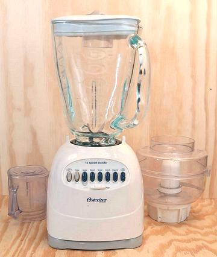

Blender

A blender is basically a Smoothie making machine. It can also
purée soups and other very liquid things. I find it suboptimal
for other tasks, and, since I never make Smoothies, I used mine only
rarely. This photo of my blender was taken as I prepared to donate it
to a charity. It has been replaced by a 3 can Indian
Mixie, a far more capable machine
- and yes, the Mixie can make Smoothies too.
There are many people who practically live on Smoothies, and to them
a blender is an essential "always ready" appliance - but, real Smoothie
addicts report Vitamix to be the only brand worth having. Others can't
stand up to the constant high speed use. Vitamix has added a new "low
cost" blender at only 2020 US $289. The regular home line runs from
$389 to over $700. They have a professional version that's over
$2,000.
More on Kitchen Gear.
ke_blendz 201125 - www.clovegarden.com
©Andrew Grygus - agryg@clovegaden.com
Photos on this
page not otherwise credited are © cg1 -
Linking to and non-commercial use of this page permitted